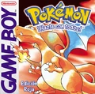
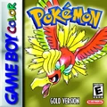
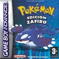
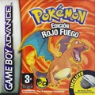

Pokémon Rojo/Azul (1998)
El inicio de la saga. Cuenta con 151 Pokémon originales.

Pokémon Oro/Plata (1999)
La nueva región de Johto con 100 nuevos Pokémon. Introdujo día/noche y crianza.

Pokémon Rubi/Zafiro (2002)
En la región de Hoenn, se introdujeron los combates dobles.

Pokémon Rojo Fuego/Verde Hoja (2004)
Remake moderno del clásico Rojo, con gráficos GameBoyAdvance y nuevas zonas.